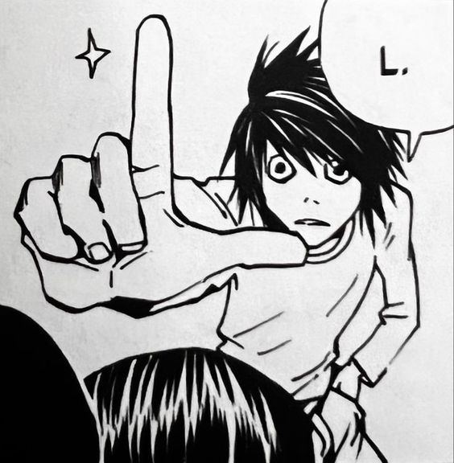
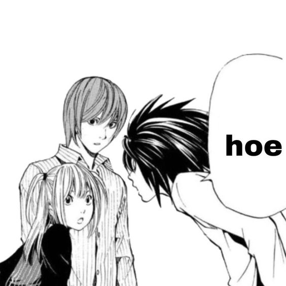
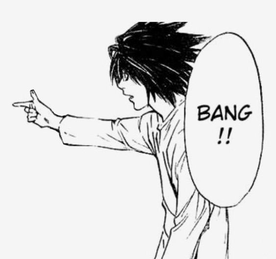

Death Note (デスノート Desu Nōto?, lit. "Caderno da Morte") é uma série de mangá escrita por Tsugumi Ohba e ilustrada por Takeshi Obata. Os capítulos do mangá foram serializados na revista semanal japonesa Weekly Shōnen Jump de 2003 até 2006, com os capítulos compilados em um total de 12 volumes tankōbon e lançados pela editora Shueisha.[1] No Brasil, a série de mangá foi licenciada publicada em duas versões pela editora JBC, que também lançou as duas light novels da série.[2][3] Em Portugal, o mangá foi licenciado pela Viz Media Europa e publicado pela Editora Devir.[4]

Light Yagami é um estudante da cidade de Tóquio, no Japão. Um dia, sua vida sofre uma mudança radical, quando ele está entediado e encontra um estranho caderno sobrenatural chamado "Death Note", caído no chão.[5] Dentro do caderno havia instruções sobre sua utilização, onde dizia que se escrevesse o nome de uma pessoa e visualizasse mentalmente o rosto desta, ela morreria de um ataque cardíaco em 40 segundos (se acaso a morte não for especificada).

Os shinigamis são os portadores originais dos Death Notes e graças aos seus olhos podem matar as pessoas facilmente, já que lhes permitem ver o nome verdadeiro das pessoas e o tempo que lhes resta de vida.

O diretor da adaptação do anime, Tetsurō Araki, comentou que queria destacar os aspectos que tornaram a série interessante, em vez de se concentrar apenas na moral ou no conceito de justiça. O organizador da série, Toshiki Inoue, concordou com Araki e acrescentou que na adaptação do anime era importante destacar os aspectos que fazem a versão original interessante. Ele concluiu que a presença de Light foi o aspecto "mais atrativo", pelo modo que a adaptação narra "os pensamentos e ações de Light sempre que possível". Inoue notou que, para incorporar melhor o enredo do mangá no anime, ele mudou a ordem dos eventos e introduziu cenas retrospectivas depois da música-tema de abertura.